← 返回阅读库 · 原论文目录
论文讲解阅读文档 · 内容生成 · v007
RetinaGAN An Object-aware Approach to Sim-to-Real Transfer[2011.03148]
视频时长 00:11:28；讲解文字 5,207 字符；提取讲解画面 32 张。按视频原顺序阅读，每段文字保留时间戳。
文字来自整段视频的自动语音转写，按自然停顿分段，并与 PPT / 论文页面 / 演示画面对齐。未将讲解压缩为摘要；术语、数字和口述公式请结合画面及原论文核对。 阅读稿已校正规范部分明确术语误识别；原始逐字稿和每处修改记录另行保留。
讲解画面为源视频截图（640×360），不是可编辑 PPT 文件。全片按每秒 2 帧扫描内容变化，逐步展开页保留；连续动画保留代表画面。清晰度受源视频限制。
下载完整资料包 · 含离线 HTML、PDF、Word、全部 PPT 画面和字幕。
原论文与材料
RetinaGAN: An Object-aware Approach to Sim-to-Real Transfer · 下载完整 PDF（9 页）
按时间阅读
00:00:00–00:01:05 · 画面 001
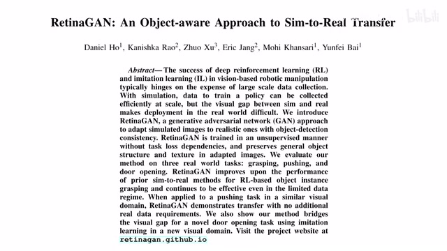
00:00:00–00:01:05 · 画面 001大家好,今天我们来迅速说一篇论文 RetinaGAN, An Object-Aware Approach to Sim-to-Real Transfer。这篇论文的思路跟我们之前介绍的 RL CycleGAN 是一样的，都是通过一个 CycleGAN 的形式把我们的模拟图像变成了类似于真实的图像这样子。我们就可以利用模拟器来疯狂的训练我们的 agent，达到提升性能的目的。但是相对于之前的 RL CycleGAN本文是使用的 object-aware 也就是说通过这个 object-detection 通过这个目标的检测来约束 domain transfer 之后这个语义信息不让它变那么对比这个 RL 来说它显然是更加稳定的而这个 detector 对吧都是开在即时开箱即用的很方便拿一个过来就可以了你也不用跟着实际的环境在一起训练比这个 reinforcement learning 的应用要方便得多
所以呢我觉得这篇文章呢是比之前的 RL CycleGAN 更有通用性那么下面我们继续来看作者的实践首先基本的思路都是一个 CycleGAN 把虚拟的图像变成真实的图像然后呢我们做 reinforcement learning 甚至说做 behavior cloning 都可以那么本文区别于之前的 RL CycleGAN 呢就是呢它这里原来是这个 RL consistency loss 现在呢使用的是 perception consistency loss
00:01:05–00:01:15 · 画面 002
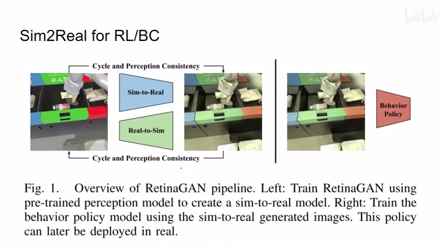
00:01:05–00:01:15 · 画面 00200:01:15–00:02:04 · 画面 003
00:01:15–00:02:04 · 画面 003那具体的原理呢就是我们这里你看到有 Object Detector 在我们原来的这个 CycleGAN 的这个 Loss 的基础上呢我们要保证这个输入的图像 Transfer 一次之后的图像 Transfer 两次之后的图像它们呢经过这个 Object Detector 之后呢都能够检测到相同的物体这样子呢来通过约束这三个图像的检测的结果来保证说我们这个在 Transfer 过程中语义信息没有丢失你当然可以理解成为就是原来干的基础上我再加一个 discriminator 而这个 discriminator 呢它是 object aware 它专注于评价说你这个网络中生成的各种物体的它的性能那么下面呢这块呢是从这个 real world 到 simulation 再到 real world 啊一个样本同样的也是跟上面对称的一个结构那正如我们之前所说呢这个 object detector 它喊了去了对吧啊你找一个出来
00:02:04–00:02:05 · 画面 004
00:02:04–00:02:05 · 画面 00400:02:05–00:02:25 · 画面 005
00:02:05–00:02:25 · 画面 005你就把它固定住每次当个工具人一样呢是用一用就可以了那么下面我们来具体看到作者的实现啊这个他是用了一个 CycleGAN 加上这个 detector 形式那么 detector backbone 呢是用了这个 EfficientDet 而他使用的这个 loss 呢是这个 RetinaNet 里面的这个 focal loss 啊那么下面呢我们具体来看之前呢我们有一个 detector 他呢可以处理这个 simulation 和这个 real world 这个 object detection 的问题
00:02:25–00:02:26 · 画面 006
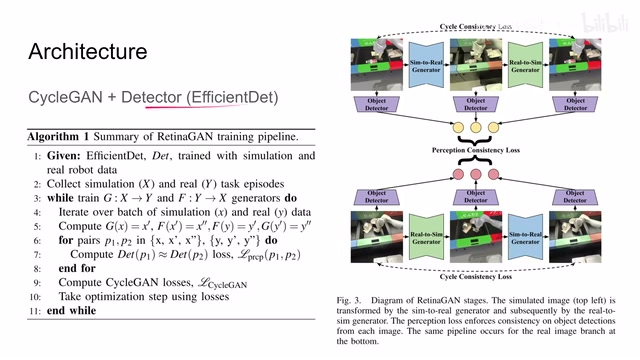
00:02:25–00:02:26 · 画面 00600:02:26–00:02:56 · 画面 007
00:02:26–00:02:56 · 画面 007然后呢我们开始任务的轨迹就可以开始训练我们这个干那么那么首先呢对吧各种两次 transfer 啊都写在这里然后呢对于我们的每一个样本来说他经过这个 transfer 之后的图像那么你在我们的 detector 里面的检测结果呢都应该是近似的那么关于这个 loss 的具体构成呢我们后面马上会讲那么此外呢我们还有常规的这个 cycle 干的 loss
00:02:56–00:02:57 · 画面 008
00:02:56–00:02:57 · 画面 00800:02:57–00:03:03 · 画面 009
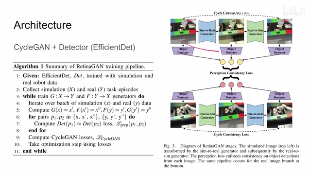
00:02:57–00:03:03 · 画面 00900:03:03–00:03:09 · 画面 010
00:03:03–00:03:09 · 画面 01000:03:09–00:03:14 · 画面 011
00:03:09–00:03:14 · 画面 011那把这些 loss 呢加起来一块优化这样子呢就可以训练出我们一个 cycle 干来非常直接然后训练起来呢也更加简单的一个设计那么下面呢我们就要来重点看这个 detection 环节在这个 loss 那这里呢我们想我们的网络它输出一个检测的结果它能包含哪些东西呢那首先第一个是 classification label 对吧我检测到的是一个什么玩意儿第二个呢就是 position bounding box 也就是我检测这个东西在哪
00:03:14–00:03:24 · 画面 012
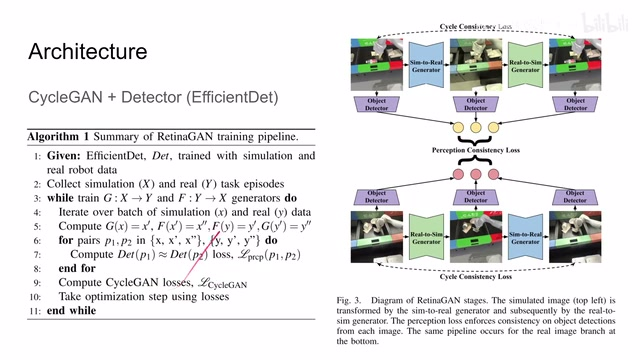
00:03:14–00:03:24 · 画面 01200:03:24–00:04:28 · 画面 013
00:03:24–00:04:28 · 画面 013bounding box 它本身就是图像中的这个二维的坐标嘛所以呢你说两个坐标的这个差直弯的就是 L2 distance 一个距离完了嘛但这里呢作者为了防止说这个 bounding box 它的距离差距过于炸裂呢他用了这个 Huber loss 那等下呢我们看到他的图像呢你就知道了那么关于这个 classification 呢这里呢作者用的是这个 focal similarity 或者叫做 focal consistency loss 那么它呢是直接来源于这个 focal loss
等下我们会仔细把它的设计讲清楚，那么现在我们只需要了解说我们 classification 有一个 loss，这个 bounding box 有一个 loss，把这两个 loss 加起来就是我们的所谓的 perception consistency loss，在语义上我们检测的东西是一致的，那么显然我们一幅图像它有两个面种，就是一共有三个图像，那么三个图像大家相互搞一搞就会有三个 perception loss，这里为什么有一半呢
00:04:28–00:04:29 · 画面 014
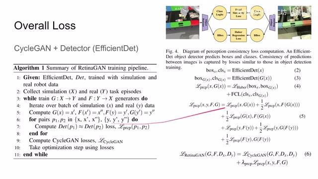
00:04:28–00:04:29 · 画面 01400:04:29–00:04:44 · 画面 015
00:04:29–00:04:44 · 画面 015那这时候呢，有朋友就会问了，哎，这里怎么有个二分之一呢，那作者解释的是说，那因为我们这个 transfer 两次的图像呢，跟我们这个原始的图像还有 transfer 一次的图像已经比过两次了，所以呢，这里加了一个二分之一，我也没 get 到它这个脑回路到底是怎么样子的，不过呢，实验证明说你加不加这二分之一影响不是特别的明显
00:04:44–00:04:47 · 画面 016
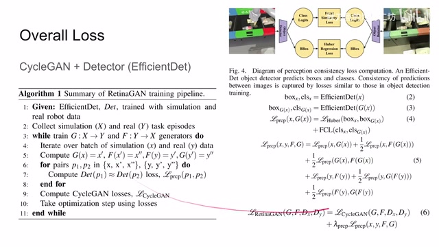
00:04:44–00:04:47 · 画面 01600:04:47–00:05:11 · 画面 017
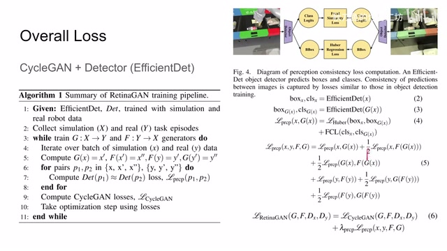
00:04:47–00:05:11 · 画面 017那么最后呢我们把这个 perception loss 和我们的 CycleGAN 的 loss 呢组合起来就是本文的这个 RetinaGAN 的 loss 那么还是一个非常直接的设计那么下面呢我们就要来看这个 Huber loss 还有这个 focal similarity loss 那首先这个 Huber loss 呢你在 wiki 上一搜啊就有了当它这个差小一定阈值的时候呢使用的是 L2 distance 大一定阈值的时候呢它长这个样子那你可以看到呢这个绿色的线呢就是这个 Huber loss
00:05:11–00:05:18 · 画面 018
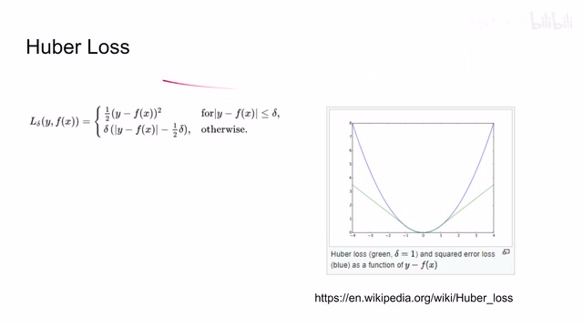
00:05:11–00:05:18 · 画面 01800:05:18–00:05:23 · 画面 019
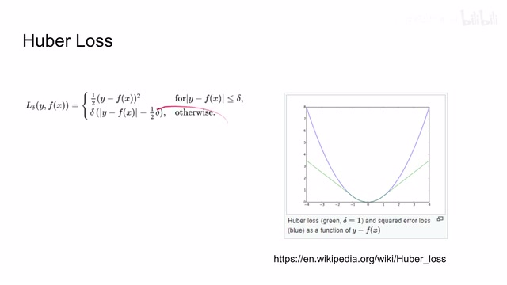
00:05:18–00:05:23 · 画面 01900:05:23–00:05:35 · 画面 020
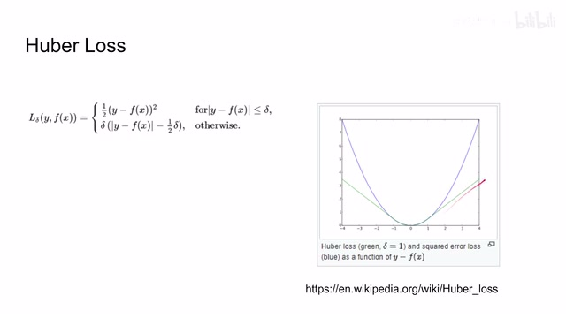
00:05:23–00:05:35 · 画面 020这个蓝色的线就是我们的 L2 distance 主要区别就是在这个误差变大的时候这 loss 并没有说过度的爆炸它是非常简单的那么下面我们来看到这个 focal consistency loss 它是根据 RetinaNet 提出的主要就是解决我们在这个物体检测中前景的这个 label 和背景的 label 数量差距太大导致了这个样本的极度不平衡这样一个问题
00:05:35–00:05:44 · 画面 021
00:05:35–00:05:44 · 画面 02100:05:44–00:05:48 · 画面 022
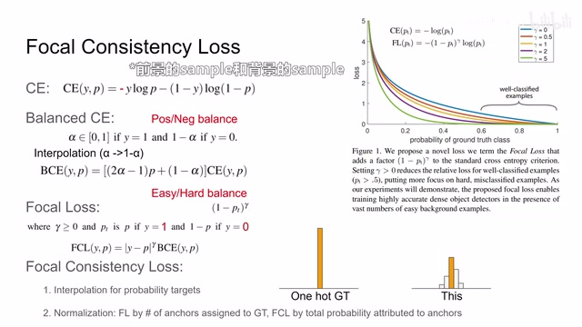
00:05:44–00:05:48 · 画面 02200:05:48–00:07:48 · 画面 023
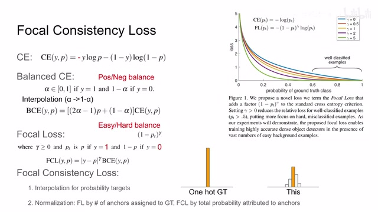
00:05:48–00:07:48 · 画面 023那当然呢，这里为了简化呢，我们把这个 classification 呢给它简化成二分类的论体，那从最开始我们有这个 cross entropy，那假如说我们的 label 是 y 对吧，分类区给出的分数呢是这个 p，那 cross entropy 呢就表示呢就长这个样子，那你可以看到如果是 y 等于 1 的话，那就只有前面这块，如果是 y 等于 0 的话，就只有后面这一块那么在 cross entropy 的基础上呢为了解决我们的这个 positive sample 和 negative sample 正负样本它们的数量差距悬殊这个问题呢我们提出了这个叫 balanced cross entropy 它的缩写也叫 BCE 啊但是区别于这个 binary cross entropy 啊这个你要分清楚那它的思想呢就是说我现在有一个 alpha 这个值它是属于 0 到 1 的那如果 y 等于 1 的时候呢我在我的 laus 前面呢将这个全数为 alpha 的这么一个东西那么如果 y 等于 0 的时候呢
那么如果 y 等于 0 的时候呢我在整个这个 loss 前面呢加上这个 1-α这样一个权重这个东西那这里呢同样的我们把这个α和 1-α呢一起写到这个北达式里面那就是这样一个形式但是注意这里呢根据它的描述呢应该是 y 而不应该是 p 这个样子那假如说 y 等于 1 的时候呢是 2α-1 加上这个 1-α那就是等于这个α那假如说这个 y 等于 0 的时候呢就直接是 1-α就是这样一个表达式，这个呢叫做 balanced cross entropy。那么再往下呢，作者说为了让我们的这个 loss 更加关注这些这个困难的这些样本，而不是说把这个很多 loss 放到这个简单样本之上。这里呢，作者呢提出了在前面再加这样一个权种。那这里呢，我们的这个 gamma 呢是一个大于等于 0pt 呢，在 y 等于 1 的时候取到 p
在 Y 等于 0 的时候呢，取到 1-P。这里的论文的原文呢又写错了，我们应该以原始的这个 focal loss 这个论文呢为准。那我把这个权重呢写到这个贝拉式里呢，看到写成了这样一个形式。那假如说 Y 等于 11-P 绝对值对吧，它的伽瓦次方那就是这个样子。那假如说这个 Y 等于 0，就是负 P 的绝对值，也就是 P 它的伽瓦次方，跟我们这个想要的效果是一致的。那么这个呢就是原味的 focal loss
00:07:48–00:08:07 · 画面 024
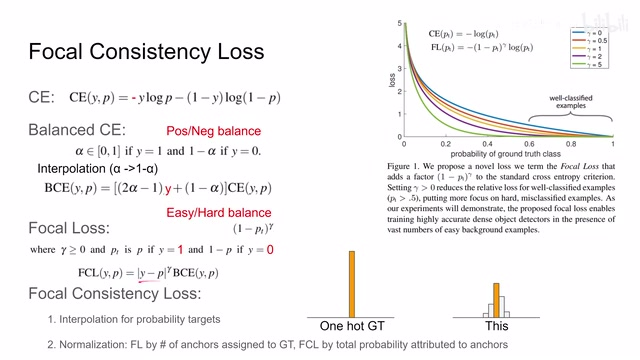
00:07:48–00:08:07 · 画面 024你看到在这里，假设这个 Gamma 等于 0 的时候，它就是这个 Cross Entropy。随着 Gamma 的增加，我们可以看到它如果分类正确，我们对它的惩罚这个 Loss 就越来越小。这样子，我们就更能够关注这些分类错误的样本。那么当然，这里我们把这个 Focal Loss 转化成 Focal Consistency Loss。还有一个问题就是说，我们在原来训练这个 Object Detector 的时候，我们是有真正的 Ground Truth
00:08:07–00:08:08 · 画面 025
00:08:07–00:08:08 · 画面 02500:08:08–00:09:12 · 画面 026
00:08:08–00:09:12 · 画面 026它呢对于每一个物体的标签呢就是一个确定的值。但是呢在本文的设计当中呢，我们呢是希望两个这个 object detector 它的结果一致，而并没有说有一个真正的 ground truth。所以呢，很自然而然的，你的这个两个 object detector 呢，它的这个 classifier 出来之后呢，结果是应该是这样的，它是一个 distribution，而不是说单纯的只有这样一个万号的 ground truth那么为了应对这种输出形式的改变呢，这里呢作者需要相应的做一些调整。那首先第一个就是这个 interpolation。那我们又回到这个 balance cross entropy
那这里呢，我们刚刚把它改成了这个 Y。现在呢，我们要把它改成 P。我们这里获得的 Y 呢，应该是从另一个网络里面检测出来的结果，就有点像知识蒸馏的这种配置，但不完全是啊。总之呢，我们理解说这个 Y 呢是另一个网络给出的结果。然后呢，当天网络的检测结果呢应该和另一个网络给出的结果相一致就可以了。那具体的实现细节包括它 Normalization 的方法跟原来的这个 Focal Loss 呢也不太一样
00:09:12–00:09:45 · 画面 027
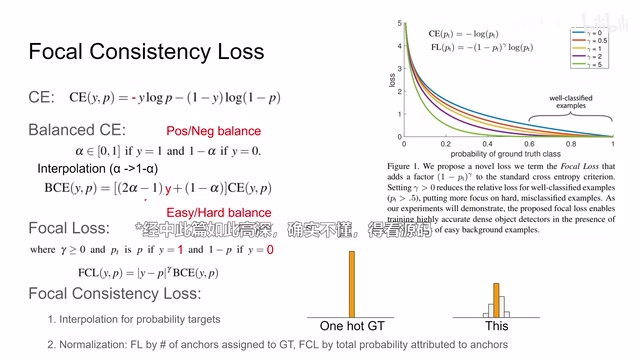
00:09:12–00:09:45 · 画面 027那这个他描述的也不老清楚，也没有代码，我们就不做深入的讲解了。那么另外呢，还有一个问题就是我的两幅图像它的检测出来的结果，我们怎么能够保证它的这个检测结果的匹配呢？假如说我在第一个图像里面检测了一个瓶子，它是第一号物体。那么在第二个图像里面我检测这个瓶子的时候呢，它变成了第二号物体了
00:09:45–00:10:36 · 画面 028
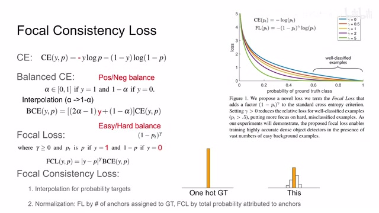
00:09:45–00:10:36 · 画面 028那么我应该怎么样匹配说这个物体检测到的顺序的时候的变化啊？甚至说包括有时候检测到有时候没有检测到这个变化呢？这个呢我也没有看到详细的论述。所以呢，这里我们只能掌握一个大意，只能闪。但是总的来说呢，这个 consistency loss 呢就是把两个目标的这个检测结果那给它 call 了。使用的方法呢就像有监督的这个 focal loss 一样只不过因为我们的监督的 label 是这样一个形式，它是一个概率分布，所以我们要做一些对应的修改。好的，那么以上就是本文的主要的技术贡献。下面我们来看作者汇报的结果。这里作者使用的是 Q2OPT 做了三个任务，第一个就是抓取，第二个是推瓶子，第三个是给我推门。可以看到这里一个是少量的样本情况下，本文的方法能够取得不错的成功率
00:10:36–00:11:01 · 画面 029
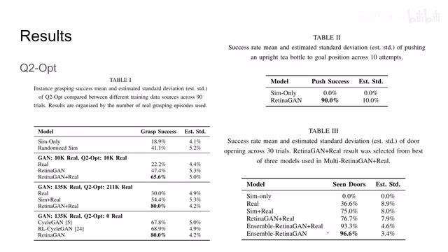
00:10:36–00:11:01 · 画面 029所以，那么随着样本的增加，甚至没有 on-policy 的这个环节呢，我们的成功率呢依然很不错。那包括这边呢，都是一些美好的数字。那总的来说呢，正如我们一开始所讲的，这个使用 object-aware 的方法呢，是一个更加通用的方法，性能上呢比这个 rl-cycle 干的更加好。那你用膝盖想一想也知道，这个 object-detector 呢肯定比这个 reinforcement learning 呢要稳定，所以这也是一个不意外的事情
00:11:01–00:11:03 · 画面 030
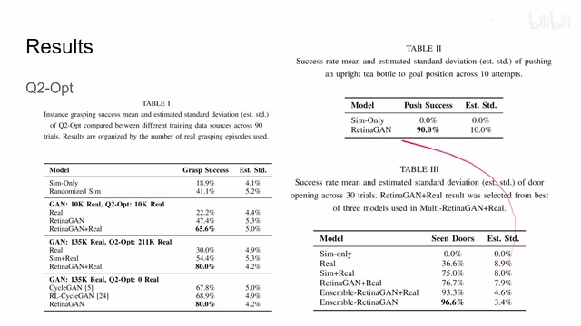
00:11:01–00:11:03 · 画面 03000:11:03–00:11:28 · 画面 031
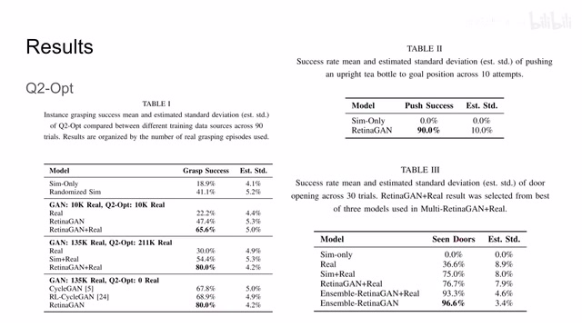
00:11:03–00:11:28 · 画面 031那么以上呢，就是我对这篇论文的简单的分析，感谢您的收看，再见
00:11:28–00:11:28 · 画面 032
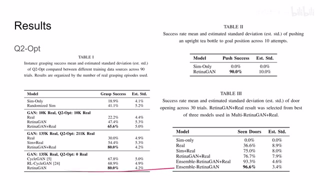
00:11:28–00:11:28 · 画面 032转写与来源说明 · 0 个自动复核提示
保留 27 个原始语音片段，0 个片段触发自动复核提示。提示仅用于定位可能的术语、重复或识别问题，不等于已确认错误。
讲解画面为源视频截图（640×360），不是可编辑 PPT 文件。全片按每秒 2 帧扫描内容变化，逐步展开页保留；连续动画保留代表画面。清晰度受源视频限制。
原视频：paper/合集_2026-10-16_内容生成/[论文简析]RetinaGAN An Object-aware Approach to Sim-to-Real Transfer[2011.03148].mp4
SHA-256：daba45d6905f8259cd2675312b2848d93779ed2e3f80e182c8df9bc2e8b5e5b7
全文按视频语音与画面制作。原论文可从上方链接下载；完整资料包保留全文、原始逐字稿、字幕和校对记录。